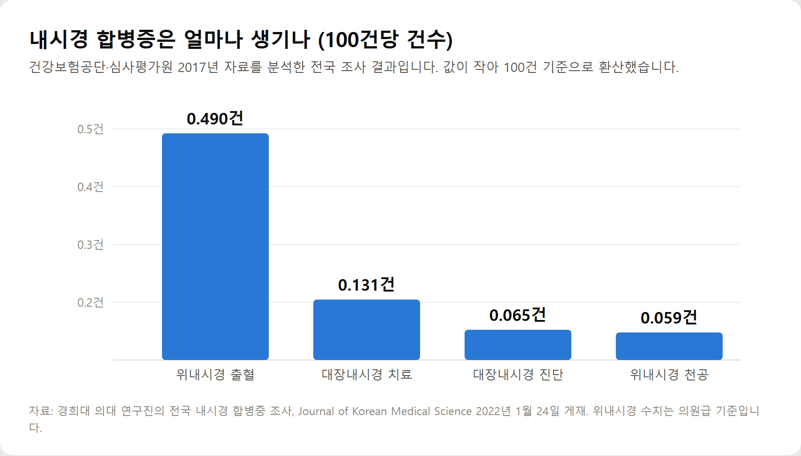
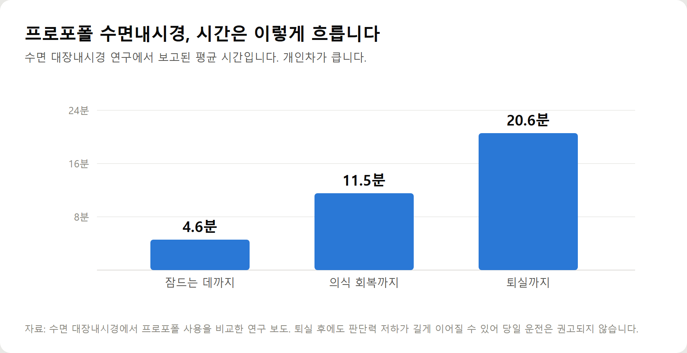
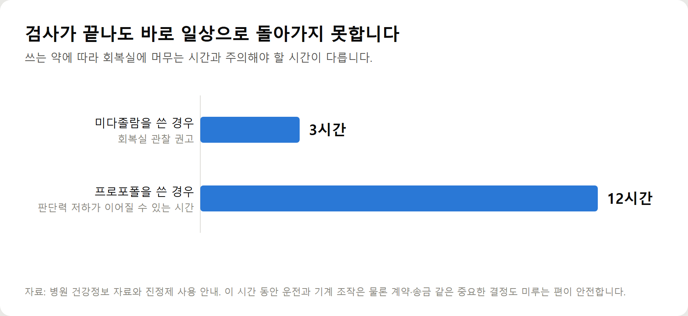
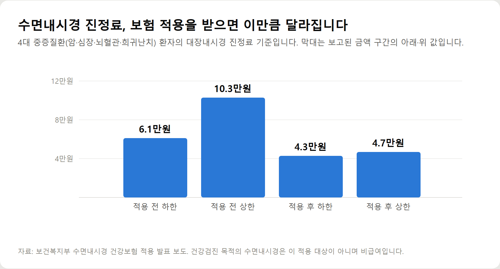

<meta charset="utf-8">
<title>수면내시경 부작용과 비용 정리 — 나의 투자 그리고 행복한 여행</title>
<meta name="description" content="수면내시경 합병증 확률과 위험군, 금식 시간, 비용과 건강보험 적용을 2026년 9월 기준으로 정리했습니다.">
<meta name="viewport" content="width=device-width, initial-scale=1">
<link rel="canonical" href="https://danielmoon82.github.io/moon/posts/sedation-endoscopy-2026-09-18.html">
<link rel="preconnect" href="https://fonts.googleapis.com">
<link rel="preconnect" href="https://fonts.gstatic.com" crossorigin>
<link rel="stylesheet" href="https://fonts.googleapis.com/css2?family=Hahmlet:wght@400;600;800&family=IBM+Plex+Mono:wght@400;500&family=IBM+Plex+Sans+KR:wght@300;400;500;600&display=swap">

<style>
  :root{
    --paper:#F2EEE6;--surface:#FAF8F3;--surface-2:#E7E1D5;
    --ink:#191510;--ink-2:#4A4235;--ink-3:#7D7364;
    --line:#D6CEBF;--line-soft:#E4DDD0;--accent:#B06A15;--accent-bright:#C2761A;
    --up:#E5484D;--down:#3B82F6;
    --f-display:"Hahmlet",'Nanum Myeongjo',"Apple SD Gothic Neo",serif;
    --f-body:"IBM Plex Sans KR","Apple SD Gothic Neo","Malgun Gothic",sans-serif;
    --f-mono:"IBM Plex Mono","SFMono-Regular",Consolas,monospace;
    --pad:clamp(20px,5vw,64px);
  }
  @media (prefers-color-scheme:dark){
    :root:not([data-theme="light"]){
      --paper:#0B1120;--surface:#121A2C;--surface-2:#1A2439;
      --ink:#E9EEF7;--ink-2:#A9B5C9;--ink-3:#72809A;
      --line:#26314A;--line-soft:#1D2739;--accent:#E8A33D;--accent-bright:#F0B45C;
    }
  }
  *{box-sizing:border-box;}
  body{margin:0;background:var(--paper);color:var(--ink);font-family:var(--f-body);
    font-weight:300;font-size:1rem;line-height:1.75;-webkit-font-smoothing:antialiased;}
  a{color:inherit;}
  img{max-width:100%;height:auto;}
  .wrap{max-width:760px;margin:0 auto;padding-inline:var(--pad);}
  .nav{position:sticky;top:0;z-index:20;background:color-mix(in srgb,var(--paper) 88%,transparent);
    backdrop-filter:saturate(180%) blur(12px);border-bottom:1px solid var(--line);}
  .nav-in{display:flex;align-items:center;justify-content:space-between;height:58px;}
  .brand{font-family:var(--f-display);font-weight:600;font-size:1rem;letter-spacing:-.02em;text-decoration:none;}
  .back{font-family:var(--f-mono);font-size:.72rem;color:var(--ink-3);text-decoration:none;}
  .article{padding-block:clamp(40px,7vw,72px) clamp(56px,9vw,96px);}
  .eyebrow{font-family:var(--f-mono);font-size:.68rem;letter-spacing:.16em;text-transform:uppercase;
    color:var(--accent);margin:0 0 14px;}
  h1{font-family:var(--f-display);font-weight:800;font-size:clamp(1.6rem,4.4vw,2.3rem);
    line-height:1.3;letter-spacing:-.03em;margin:0 0 16px;}
  .byline{font-family:var(--f-mono);font-size:.72rem;color:var(--ink-3);
    padding-bottom:24px;border-bottom:1px solid var(--line);margin-bottom:32px;}
  h2{font-family:var(--f-display);font-weight:600;font-size:1.25rem;letter-spacing:-.02em;margin:42px 0 14px;}
  h3{font-family:var(--f-display);font-weight:600;font-size:1.05rem;letter-spacing:-.02em;
    margin:30px 0 10px;padding-top:14px;border-top:1px solid var(--line-soft);}
  h3 .code{font-family:var(--f-mono);font-size:.7rem;font-weight:400;color:var(--ink-3);margin-left:6px;}
  p{margin:0 0 18px;color:var(--ink-2);}
  ul.checks{margin:0 0 18px;padding-left:20px;color:var(--ink-2);}
  ul.checks li{margin-bottom:8px;font-size:.94rem;}
  table{width:100%;border-collapse:collapse;font-size:.88rem;margin-bottom:8px;}
  th{font-family:var(--f-mono);font-size:.66rem;letter-spacing:.06em;text-transform:uppercase;
    color:var(--ink-3);text-align:right;padding:8px 6px;border-bottom:1px solid var(--line);}
  th:first-child{text-align:left;}
  td{padding:10px 6px;border-bottom:1px solid var(--line-soft);color:var(--ink-2);}
  td.num{font-family:var(--f-mono);text-align:right;font-variant-numeric:tabular-nums;}
  td.up{color:var(--up);} td.down{color:var(--down);}
  .scroll{overflow-x:auto;}
  figure{margin:22px 0;}
  figure img{display:block;border-radius:3px;background:var(--surface-2);}
  figcaption{margin-top:8px;font-family:var(--f-mono);font-size:.68rem;color:var(--ink-3);text-align:center;}
  .note{margin-top:34px;padding:16px 18px;border-left:3px solid var(--accent);
    background:var(--surface);border-radius:0 3px 3px 0;}
  .note p{margin:0;font-size:.85rem;color:var(--ink-3);}
  .foot{border-top:1px solid var(--line);background:var(--surface);padding-block:30px 38px;}
  .foot p{margin:0;font-size:.8rem;color:var(--ink-3);}
</style>

<nav class="nav">
  <div class="wrap nav-in">
    <a class="brand" href="../index.html">나의 투자 그리고 행복한 여행</a>
    <a class="back" href="../index.html#stocks">← 시황으로</a>
  </div>
</nav>

<main class="wrap article">
  <p class="eyebrow">Market</p>
  <h1>수면내시경 데이터 정리 — 합병증 발생률·진정 회복 시간·비용 기준</h1>
  <p class="byline">건강 · 2026-09-18 기준</p>

  <p>한 줄 요약: 전국 조사에서 대장내시경 진단 검사의 합병증은 100건당 0.065건, 치료 검사는 0.131건이었고, 위내시경은 의원급 기준 출혈 0.490건·천공 0.059건이었습니다.</p>
  <p>프로포폴 수면 대장내시경의 평균 소요 시간은 진정 유도 4.6분, 의식 회복 11.5분, 퇴실 20.6분으로 보고됐습니다. 다만 판단력 저하는 최대 12시간까지 이어질 수 있습니다.</p>
  <p>건강검진 목적의 수면내시경은 2026년 9월 현재 비급여입니다. 이 글은 공개된 조사와 권고안만 모아 정리한 기록입니다.</p>
  <h2>1. 수면내시경 합병증, 실제 확률은 얼마나 되나</h2>
  <p>걱정의 크기를 정하려면 숫자부터 봐야 합니다.</p>
  <p>경희대 의과대학 연구진이 건강보험공단과 심사평가원의 2017년 자료로 전국 내시경 합병증을 집계했습니다. 결과는 2022년 1월 24일 Journal of Korean Medical Science에 실렸습니다.</p>
  <figure><figcaption>내시경 종류별 합병증 발생 건수 100건당 기준 (자료: JKMS 2022년 1월)</figcaption></figure>
  <p>대장내시경은 진단 목적일 때 100건당 0.065건, 용종 제거 같은 치료를 함께 하면 0.131건이었습니다.</p>
  <p>위내시경은 의원급 기준으로 출혈이 0.490건, 천공이 0.059건이었습니다.</p>
  <p>여기서 짚어둘 것이 있습니다.</p>
  <div class="note"><p>이 수치는 내시경 시술 자체의 합병증입니다. 잠들게 하는 약 때문에 생기는 문제는 별도로 봐야 합니다. 뉴스에 나오는 사고의 상당수는 기구가 아니라 진정 과정에서 생깁니다.</p></div>
  <p>대장암 검진 권고안에 정리된 자료를 보면 대장내시경의 중대한 합병증은 0~0.47%, 사망은 0~0.06% 범위로 보고돼 있습니다.</p>
  <p>미국소화기학회는 천공률을 진단 내시경 0.1% 미만, 치료 내시경 0.2% 미만으로 유지하도록 권고합니다. 국내 수치는 이 기준 안에 들어옵니다.</p>
  <h2>2. 위험한 것은 내시경이 아니라 '진정'입니다</h2>
  <p>이 글에서 가장 강조하고 싶은 부분입니다.</p>
  <p>수면내시경은 전신마취가 아닙니다. 의식을 낮추는 약을 정맥으로 넣어 잠든 것처럼 만드는 '진정'입니다.</p>
  <p>그래서 검사실에서는 두 가지 일이 동시에 벌어집니다. 하나는 내시경을 넣어 살펴보는 일, 다른 하나는 환자의 호흡과 맥박, 산소포화도를 지켜보는 일입니다.</p>
  <p>문제는 두 번째 일에서 생깁니다.</p>
  <p>진정제를 쓰면 근육이 늘어지면서 혀뿌리가 기도를 막을 수 있습니다. 숨이 얕아지거나 잠깐 멎기도 합니다.</p>
  <p>보고되는 부작용은 이런 것들입니다.</p>
  <ul class="checks">
    <li>기도 폐쇄</li>
    <li>무호흡과 호흡 억제</li>
    <li>혈압 저하</li>
    <li>심장 기능 저하</li>
    <li>주사 부위 통증</li>
  </ul>
  <p>대부분은 산소를 공급하고 자세를 바꾸는 것으로 회복됩니다. 다만 알아차리는 사람이 곁에 없으면 이야기가 달라집니다.</p>
  <p>그래서 같은 검사라도 감시 장비와 인력, 회복실 운영 여부에 따라 안전의 폭이 달라집니다.</p>
  <h2>3. 프로포폴과 미다졸람, 무엇이 다른가</h2>
  <p>수면내시경에 주로 쓰이는 약은 두 가지입니다. 어느 약을 쓰는지에 따라 회복 양상이 달라집니다.</p>
  <p>프로포폴은 흰색 액체로 된 정맥 마취제입니다. 투여 후 30초 안에 작용이 시작되고 3~10분 정도로 짧게 지속됩니다.</p>
  <p>깊이 잠들고 빨리 깨는 대신, 호흡을 억제하는 힘도 그만큼 강합니다.</p>
  <figure><figcaption>프로포폴 수면 대장내시경의 평균 소요 시간 (단위: 분)</figcaption></figure>
  <p>수면 대장내시경 연구에서 진정 유도까지 평균 4.6분, 의식 회복까지 11.5분, 퇴실까지 20.6분이 걸렸습니다.</p>
  <p>미다졸람은 벤조디아제핀 계열의 진정제입니다. 기도를 이완시키는 정도가 상대적으로 덜한 대신, 회복이 더 오래 걸립니다.</p>
  <p>투여 후 3시간 동안은 퇴원하지 않도록 권고됩니다.</p>
  <p>어느 쪽이 더 좋다고 단정할 수 없습니다. 검사 시간과 환자의 상태에 따라 의료진이 정합니다. 다만 본인에게 무슨 약을 쓰는지는 물어볼 만합니다.</p>
  <h2>4. 이런 분은 수면내시경 전에 반드시 말씀하셔야 합니다</h2>
  <p>진정의 위험은 모두에게 같지 않습니다. 기도가 막히기 쉬운 조건을 가진 분에게 위험이 몰립니다.</p>
  <p>아래에 해당하면 접수할 때가 아니라 의료진에게 직접 말씀하십시오.</p>
  <ul class="checks">
    <li>코골이가 심하거나 수면무호흡증 진단을 받은 경우</li>
    <li>목이 짧고 굵으며 체중이 많이 나가는 경우</li>
    <li>심장질환이나 부정맥으로 치료받는 경우</li>
    <li>만성 폐질환이나 천식이 있는 경우</li>
    <li>고령이면서 여러 약을 함께 복용하는 경우</li>
    <li>예전 수면내시경에서 잘 깨지 못했던 경험이 있는 경우</li>
    <li>수면제나 신경안정제를 오래 복용해 온 경우</li>
  </ul>
  <p>중등도 이상의 수면무호흡증이 있으면 진정 중 기도가 막힐 위험이 높아집니다.</p>
  <p>이런 경우 수면내시경을 못 받는 것은 아닙니다. 약의 종류와 용량을 조절하고 산소포화도를 더 자주 확인하는 방식으로 대응합니다.</p>
  <div class="note"><p>숨겨서 얻을 것이 없습니다. 미리 말씀드리면 의료진이 준비하고, 말하지 않으면 검사 중에 대응하게 됩니다. 이 차이가 결과를 가릅니다.</p></div>
  <h2>5. 검사 전 준비 — 금식과 복용 중인 약</h2>
  <p>금식을 지키는 이유는 배가 비어야 잘 보이기 때문만이 아닙니다.</p>
  <p>위에 음식이 남아 있으면 진정 상태에서 그것이 올라와 기도로 넘어갈 수 있습니다. 폐렴으로 이어지기도 합니다.</p>
  <p>위내시경은 검사 시각 기준으로 최소 8시간, 넉넉히는 12시간 금식을 안내합니다.</p>
  <p>물도 포함입니다. 병원마다 기준이 조금씩 다르므로 받은 안내문을 따르시는 편이 정확합니다.</p>
  <p>약은 종류에 따라 처리가 다릅니다.</p>
  <ul class="checks">
    <li>혈압약은 대개 소량의 물과 함께 복용하도록 안내합니다</li>
    <li>당뇨약과 인슐린은 저혈당 위험이 있어 조정이 필요합니다</li>
    <li>아스피린이나 항응고제는 출혈 위험 때문에 중단 여부를 미리 확인해야 합니다</li>
    <li>한약이나 건강기능식품도 복용 사실을 알리는 편이 좋습니다</li>
  </ul>
  <p>스스로 판단해 끊지 마십시오. 특히 항응고제는 임의 중단이 더 위험할 수 있어 처방한 의사와 상의해야 합니다.</p>
  <h2>6. 검사가 끝난 뒤 12시간, 놓치기 쉬운 부분</h2>
  <p>회복실에서 눈을 뜨면 검사가 끝났다고 생각하게 됩니다. 실제로는 그렇지 않습니다.</p>
  <figure><figcaption>진정제 종류에 따른 검사 후 주의 시간 (단위: 시간)</figcaption></figure>
  <p>프로포폴은 의식이 돌아온 뒤에도 몽롱함이 이어질 수 있고, 정상적인 판단이 어려운 상태가 12시간까지 지속될 수 있다고 보고됩니다.</p>
  <p>그래서 검사 당일에는 다음을 피하셔야 합니다.</p>
  <ul class="checks">
    <li>직접 운전하기</li>
    <li>기계나 사다리를 다루는 일</li>
    <li>계약서에 서명하거나 큰 금액을 송금하는 일</li>
    <li>중요한 회의나 면담</li>
    <li>음주</li>
  </ul>
  <p>운전 금지는 대부분 안내받습니다. 정작 놓치는 것은 세 번째입니다.</p>
  <p>판단력이 흐린 상태에서 금융 앱을 열거나 서류에 서명하는 일은 안내문에 잘 적히지 않습니다. 그날은 미루시는 편이 안전합니다.</p>
  <p>혼자 오셨다면 택시나 대중교통을 이용하고, 가능하면 보호자와 함께 가시는 것이 좋습니다.</p>
  <h2>7. 수면내시경 비용과 건강보험 적용 범위</h2>
  <p>비용을 가르는 기준은 검사 목적입니다.</p>
  <p>건강검진으로 받는 수면내시경의 진정료는 2026년 9월 현재 건강보험이 적용되지 않습니다. 검사비와 별도로 추가 비용을 내야 합니다.</p>
  <p>반면 암, 심장질환, 뇌혈관질환, 희귀난치성질환에 해당하는 분이 진단이나 치료 목적으로 받을 때는 적용을 받습니다.</p>
  <figure><figcaption>4대 중증질환 대장내시경 진정료의 보험 적용 전후 비교 (단위: 만원)</figcaption></figure>
  <p>보건복지부 발표 기준으로 4대 중증질환자의 대장내시경 진정료는 6만1,000~10만3,000원에서 4만3,000~4만7,000원으로 낮아졌습니다.</p>
  <p>치료 목적의 내시경 종양절제술은 20만4,000~30만7,000원에서 6만3,000~7만8,000원 수준이 됐습니다.</p>
  <p>실손보험은 가입 시기와 약관에 따라 처리가 달라집니다. 검진 목적은 보장하지 않는 경우가 많고, 증상이 있어 진료를 받은 뒤 시행한 검사는 인정되는 경우가 있습니다.</p>
  <p>정확한 판단은 가입한 보험사에 약관을 확인하셔야 합니다. 병원에서 발급하는 서류의 목적 표기가 중요해집니다.</p>
  <h2>8. 2026년 바뀐 위암 검진 권고안</h2>
  <p>40대 이상이라면 이 부분을 알아두실 만합니다.</p>
  <p>국립암센터가 주관하고 대한가정의학회, 대한내과학회 등 7개 학회가 참여한 위원회가 2026년 6월 25일 위암 검진 권고안 개정안을 발표했습니다.</p>
  <ul class="checks">
    <li>대상은 40~74세 무증상 성인</li>
    <li>주기는 2년마다</li>
    <li>1차 검사는 위내시경으로 단일화</li>
    <li>위장조영검사는 내시경이 어려운 경우에만 고려</li>
    <li>75세 이상은 건강 상태를 따져 의료진과 상담 후 결정</li>
  </ul>
  <p>이전 권고안은 위장조영검사도 선택지로 두었는데, 이번에 사실상 제외됐습니다.</p>
  <p>국가암검진의 현행 기준도 확인해 두십시오. 위암은 만 40세 이상 2년마다 위내시경, 대장암은 만 50세 이상 매년 분변잠혈검사를 받고 이상 소견이 있으면 대장내시경으로 이어집니다.</p>
  <p>국가검진에서 지원하는 것은 내시경 검사 자체입니다. 수면으로 받을 때 드는 진정료는 본인 부담입니다.</p>
  <h2>9. 병원을 고를 때 확인하면 좋은 것</h2>
  <p>가격만 비교하기 쉬운데, 확인할 것이 몇 가지 더 있습니다.</p>
  <ul class="checks">
    <li>검사 중 산소포화도와 심전도를 감시하는지</li>
    <li>회복실이 따로 있고 깨어날 때까지 지켜보는 인력이 있는지</li>
    <li>응급 상황에 쓸 산소와 기도 확보 장비를 갖췄는지</li>
    <li>진정 경험이 많은 의료진이 상주하는지</li>
    <li>검사 전 문진에서 복용 약과 지병을 꼼꼼히 묻는지</li>
  </ul>
  <p>문진표를 대충 받고 넘어가는 곳이라면 한 번 더 생각해 보셔도 좋습니다.</p>
  <p>검사 전에 "수면은 어떤 약으로 하시나요"라고 물어보는 것만으로도 확인이 됩니다.</p>
  <h2>자주 묻는 질문</h2>
  <p>Q. 수면내시경은 위험한 검사인가요?</p>
  <p>전국 조사 기준으로 대장내시경 진단 검사의 합병증은 100건당 0.065건이었습니다. 확률은 낮습니다. 다만 수면무호흡이나 심폐질환이 있으면 진정 과정의 위험이 올라가므로 미리 알리셔야 합니다.</p>
  <p>Q. 수면내시경과 일반 내시경 중 무엇이 나은가요?</p>
  <p>검사 자체의 정확도는 크게 다르지 않습니다. 수면은 불편함이 적은 대신 진정에 따르는 위험과 회복 시간이 생깁니다. 고령이거나 심폐질환이 있다면 의료진과 상의해 정하시는 편이 좋습니다.</p>
  <p>Q. 수면내시경 비용은 얼마인가요?</p>
  <p>건강검진 목적이면 진정료가 비급여라 병원마다 다릅니다. 4대 중증질환자가 진단·치료 목적으로 받을 때는 건강보험이 적용돼 대장내시경 기준 4만3,000~4만7,000원 수준으로 안내됐습니다.</p>
  <p>Q. 검사 전 금식은 몇 시간 해야 하나요?</p>
  <p>위내시경은 검사 시각 기준 최소 8시간, 넉넉히 12시간을 안내합니다. 물도 포함되며 병원마다 기준이 다르니 받은 안내문을 따르십시오.</p>
  <p>Q. 검사 후 바로 운전해도 되나요?</p>
  <p>안 됩니다. 프로포폴을 쓴 경우 판단력 저하가 12시간까지 이어질 수 있습니다. 당일에는 보호자 차량이나 대중교통을 이용하십시오.</p>
  <p>Q. 혈압약은 먹고 가도 되나요?</p>
  <p>대개는 소량의 물과 함께 복용하도록 안내합니다. 다만 당뇨약과 항응고제는 조정이 필요하므로 검사 전 진료에서 반드시 확인하셔야 합니다.</p>
  <p>Q. 수면내시경 중 사망 사고 뉴스를 봤는데 괜찮을까요?</p>
  <p>드물지만 보고되는 일입니다. 사고 대부분은 진정 중 호흡 문제와 관련이 있습니다. 감시 장비와 회복실을 갖춘 곳에서 받고, 지병과 복용 약을 미리 알리는 것이 실제로 줄일 수 있는 위험입니다.</p>
  <p>Q. 실손보험으로 처리할 수 있나요?</p>
  <p>가입 시기와 약관에 따라 다릅니다. 건강검진 목적은 보장되지 않는 경우가 많고, 증상으로 진료를 받은 뒤 시행한 검사는 인정되기도 합니다. 가입한 보험사에 확인하십시오.</p>
  <h2>정리하면</h2>
  <p>수면내시경의 합병증 확률은 낮습니다. 대장내시경 진단 검사 기준 100건당 0.065건이었습니다.</p>
  <p>그렇다고 모두에게 똑같이 안전한 것은 아닙니다. 위험은 내시경보다 진정 과정에 몰려 있고, 기도가 막히기 쉬운 조건을 가진 분에게 집중됩니다.</p>
  <p>실제로 기억하실 것은 세 가지입니다.</p>
  <ul class="checks">
    <li>코골이·수면무호흡·심폐질환·복용 약은 반드시 미리 알린다</li>
    <li>감시 장비와 회복실을 갖춘 곳에서 받는다</li>
    <li>검사 당일에는 운전과 중요한 결정을 미룬다</li>
  </ul>
  <p>위암 검진 권고안은 2026년 6월 40~74세 2년마다 위내시경으로 개정됐습니다. 40대에 들어섰다면 확인해 두실 만합니다.</p>
  <p>다음 글에서는 대장내시경 장정결제를 덜 힘들게 먹는 방법과 검사 비용을 따로 정리하겠습니다.</p>
  <div class="note"><p>이 글은 공개된 연구 자료와 검진 권고안, 병원 건강정보를 정리한 건강정보이며 개인의 진단이나 치료를 대신하지 않습니다. 검사 방식과 약의 선택은 반드시 진료를 통해 결정하시기 바랍니다.</p></div>
  <p>※ 본문 수치의 기준 시점은 2026년 9월입니다. 출처는 경희대 의과대학 연구진의 전국 내시경 합병증 조사(Journal of Korean Medical Science 2022년 1월 24일 게재), 국립암센터 주관 위암 검진 권고안 개정안(2026년 6월 25일 발표), 국가암검진 안내, 대장암 검진 권고안, 보건복지부 수면내시경 건강보험 적용 발표, 병원 건강정보 자료입니다.</p>
  <p>검진 기준과 비용은 이후 변경될 수 있으므로 검사 전 해당 의료기관과 건강보험공단에서 확인하시기 바랍니다.</p>
</main>

<footer class="foot">
  <div class="wrap"><p>나의 투자 그리고 행복한 여행 · 투자 판단의 참고 자료일 뿐, 매수·매도를 권유하지 않습니다.</p></div>
</footer>
